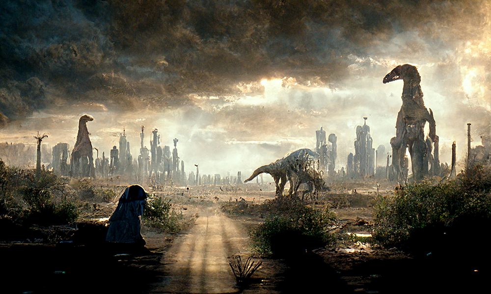

People always seem to make a big deal about 'stories with a twist', but there are other ways for an ending to have impact. In this taut tale of interminable gladiatorial torment, Sydney Sackett gives us something a little different: a story that leads you down a path of expectation, only for it to prove maybe not to be the path you thought it was.


There's supposed to be nothing quite like a good, satisfying meal, but Jeff Reynolds has an appetite-whetting recipe to defy that claim: take one very odd pear — excuse me, 'pair' — and marinate in mixed fantasy, sprinkle on a little humor, add a dash of horror, and then raise the steaks to boiling point — I mean 'stakes' — ah, enough with the puns, you get the idea…
Chinaza Eziaghighala is like one of those mysterious particles with strange asymmetry: at first glance she is a medical doctor; she turns, and is a filmmaker; turns again, and writes speculative fiction. In this latter orientation she unveils a series of encounters of the most intense kind, at first ecstatic, but all too soon horrific. Warning: this story contains sexual and violent content.

Six issues ago, Gregory L. Norris graced our pages with a succinct and sly contemporary horror that skewered the fashion scene, more or less literally. His latest story is a trip to a distant future that evokes a distant past, and it boasts the very highest of high-concept titles.

Taking its title from Edward Hopper's iconic 1942 painting, Si Wang's story jumps ahead a hundred years or so and drops us into a dystopia of urban and social decay that is, perhaps, just a bio-technological breakthrough or two away from being entirely plausible.
High school kids have long been struck with envy at the status of their peers, but Anna Zumbro poses a really thorny question: How much worse would it be if, instead of your social media feed telling you everyone else's life was that much more super, it was on the curriculum?

There's a theme in US culture about survivalism, about defending what's yours, from other citizens or the state itself. Marc Phillips' story seems to be one man's oral recounting of just such a future-history, but it might be the exact opposite of that, in one sense at least.